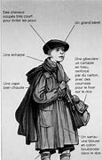

Jusqu'au début du XXe siècle, à 10 ans, fillettes et garçonnets sont habillés pareils.
Leurs tenues se composent d'une robe anglaise qu'ils portent sur une pantalette.
Suivant leur appartenance sociale, les enfants ne portent pas la même chose. Dans les milieux populaires, les habits sont taillés dans les parties récupérables des vêtements des parents. Les habits passent d'un enfant à un autre sans souci de la mode jusqu'à complète usure.
Les fillettes portent un corsage simple sans pinces et suivent la mode de leur mère, mais jupes et robes s'arrêtent au mollet à une époque où celles des femmes descendent jusqu'aux pieds.
L'âge est révélé par la longueur de sa jupe et le jeu des ourlets, c'est le triomphe du pli religieuse.
Depuis la moitié du XIXe siècle les garçons sont vêtus du Krickerbocker ou Knicker court qui s'allonge progressivement pour atteindre la cheville en 1939. Ils portent aussi le complet veston – culotte anglaise.
Dans les années 1900, le costume marin est à la mode.
Dans les années 1920, les garçons portent une veste, un pantalon court, des chaussettes qui s'attachent avec des élastiques, ils ne portent pas de sous-vêtements. Les chemises se boutonnent souvent aux culottes. Les filles portent une jupe descendant au-dessous du genou et des bas de laine. Dessous un petit corset souple et une culotte. Quand il fait trop froid ils portent des guêtres moulantes.
La culotte courte des années 1930 s'accompagne d'un pull-over sur chemise ouverte, qu'on porte de manière plus décontractée que la veste.
